Act I · The tension
A regression slope compares observations. With one cross-section, the only comparison is across units: big-market teams versus small-market teams, rich countries versus poor ones. Whatever else differs between them rides along in the slope.
This chapter adds two new sources of variation and one warning:
The question running through the whole deck: which variation identifies this coefficient, and which standard error is honest about it?
| Stop | Question | Method | Headline result |
|---|---|---|---|
| 17.2 | Do wins raise NBA revenue? | Pooled OLS, cluster SEs | +0.0068 per win; SE ×1.81 when clustered |
| 17.3 | …holding the team fixed? | Fixed effects (within) | +0.0045 per win (−33%) |
| 17.4 | FE or RE? | Random effects, Hausman | concepts (not estimated) |
| 17.4b | Who earns above $60k? | Logit vs LPM | +6.2 pp per year of schooling |
| 17.5 | Do long rates follow short rates? | Levels, HAC SEs | \(R^2 = 0.95\); HAC SE ×3.65 |
| 17.6 | Is the fit spurious? | Correlogram, differences | lag-1 \(\rho\): 0.95 → 0.25 |
| 17.6b | How fast is pass-through? | ADL(2,2) | 0.74 at once, 0.53 by month 2 |
| 17.7 | When is a slope causal? | IV & the causal toolkit | links to Ch 13 designs |
| CS 1 | Capital and productivity, 108 countries | Panel FE, two-way FE | capital elasticity 0.71 → 0.44 |
| CS 2 | Night lights in 339 municipalities | FE, year effects, FD | population slope +0.34 → −0.82 |
| Data | Structure | Size | What goes wrong with plain OLS |
|---|---|---|---|
AED_NBA.DTA |
team × season | 29 teams, 286 obs. | errors correlated within a team; team traits confound the slope |
AED_EARNINGS_COMPLETE.DTA |
cross-section, 0/1 outcome | 872 workers | a straight line predicts “probabilities” outside \([0,1]\) |
AED_INTERESTRATES.DTA |
monthly time series | 397 months | trends fake a relationship; errors are autocorrelated |
| Mendez (2020) | country × year | 108 × 25 | country traits confound capital’s slope |
| DS4Bolivia | municipality × year | 339 × 9 | municipality traits confound population’s slope |
Each structure needs two fixes: one for the coefficient (which variation) and one for the standard error (which dependence).
| SE type | pyfixest syntax | Allows errors to be… | Used for |
|---|---|---|---|
| Default (iid) | (none) | independent, equal variance | benchmark only |
| Heteroskedasticity-robust | vcov="HC1" |
independent, unequal variance | earnings LPM / logit |
| Cluster-robust | vcov={"CRV1": "teamid"} |
correlated within a cluster, independent across | NBA, CS 1, CS 2 |
| HAC (Newey–West) | vcov="NW", vcov_kwargs={"time_id": ..., "lag": 24} |
correlated across nearby periods | interest rates |
The coefficient never changes with vcov; only SEs, \(t\), \(p\) and CIs do. In this deck the honest SE is 1.8× (NBA), 4× (countries) and 3.65× (rates) the default.
When a coefficient changes as we move from one kind of variation to another, the change itself is evidence about confounding.
Each idea answers the same question under harder conditions: what is really driving \(y\)?
17.2 – 17.4 · pooled OLS, clustering, fixed effects, random effects, logit
Panel structure · within vs between · pooled OLS · cluster-robust SEs
Data. NBA team finances, 2001–02 to 2010–11 (AED_NBA.DTA): 29 teams, 286 team-seasons. Revenue is in millions of dollars.
| Variable | Meaning | Mean | Range |
|---|---|---|---|
revenue |
team revenue, $ millions | 95.7 | 58.5 – 187.7 |
lnrevenue |
log revenue (outcome) | 4.532 | 4.069 – 5.235 |
wins |
regular-season wins (of 82) | 41.0 | 9 – 67 |
playoff |
1 if the team made the playoffs | 0.545 | 0 – 1 |
teamid, season |
the two panel indexes \(i\) and \(t\) | 29 teams × up to 10 seasons |
The panel is unbalanced: 28 teams appear in all 10 seasons, the Bobcats in only 6, so \(N = 286\), not \(29 \times 10 = 290\).
\[y_{it} = \beta_1 + \beta_2 x_{it} + u_{it}, \qquad i = 1,\dots,n \;(\text{teams}),\; t = 1,\dots,T \;(\text{seasons})\]
The three estimators differ in which comparison they make, not in arithmetic sophistication.
!pip install -q pyfixest # pyfixest is not preinstalled in Colab
import numpy as np # numerical operations
import pandas as pd # tabular data
import pyfixest as pf # OLS / fixed effects with robust and cluster SEs
url = "https://raw.githubusercontent.com/quarcs-lab/data-open/master/AED/AED_NBA.DTA"
data_nba = pd.read_stata(url) # one row per team-season
print(data_nba.shape) # (286, 65): rows, columns
print(data_nba.groupby("teamid").size().value_counts()) # seasons observed per team
data_nba[["revenue", "lnrevenue", "wins", "playoff"]].describe().round(3)\[\underbrace{y_{it}-\bar y}_{\text{overall}} \;=\; \underbrace{\bar y_i-\bar y}_{\text{between}} \;+\; \underbrace{y_{it}-\bar y_i}_{\text{within}}\]
# continues from the previous block
g = data_nba.groupby("teamid") # group the rows by team
for v in ["lnrevenue", "wins"]:
overall = data_nba[v].std() # SD over all 286 team-seasons
between = g[v].mean().std() # SD of the 29 team averages
within = (data_nba[v] - g[v].transform("mean")).std() # SD of deviations from own mean
print(f"{v:10s} overall {overall:.4f} between {between:.4f} within {within:.4f}")| Variable | Overall SD | Between SD | Within SD | Share of variance |
|---|---|---|---|---|
lnrevenue |
0.2360 | 0.2127 | 0.1085 | between ≈ 81% |
wins |
12.44 | 7.04 | 10.36 | within ≈ 69% |
Shares: between variance ÷ overall variance (0.0452 / 0.0557) and within variance ÷ overall variance (107.3 / 154.7).
Fixed effects throw away 81% of the revenue variance but keep 69% of the wins variance, so the within estimator still has plenty to work with.
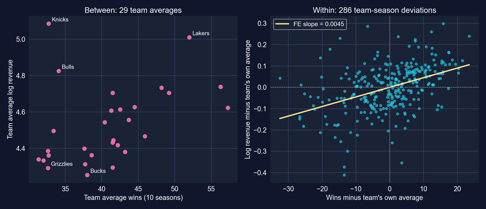
Left: one dot per team (its 10-season averages). Right: each team-season as a deviation from its own team average, with the fixed-effects slope.
The left panel mixes market size with winning (the Knicks earn the most while winning few games). The right panel compares each team only with itself.
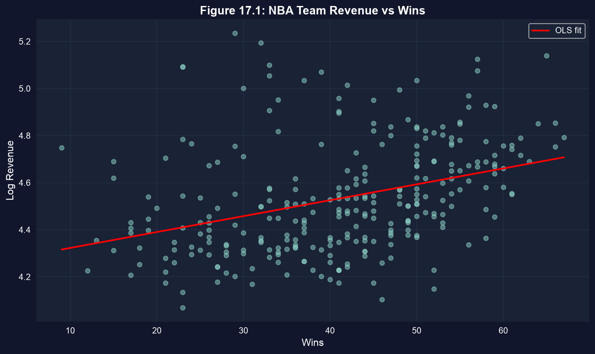
Each dot is a team-season. The pooled OLS line runs through between-team and within-team differences at once.
The pooled slope partly credits winning for market size: big-market teams sit high on the revenue axis whatever their record.
# continues from the previous block
f_iid = pf.feols("lnrevenue ~ wins", data=data_nba) # default (iid) SEs
f_hc1 = pf.feols("lnrevenue ~ wins", data=data_nba, vcov="HC1") # heteroskedasticity-robust
fit_pool = pf.feols("lnrevenue ~ wins", data=data_nba, vcov={"CRV1": "teamid"}) # by team
for name, f in [("default", f_iid), ("HC1", f_hc1), ("cluster", fit_pool)]:
print(name, f.coef()["wins"], f.se()["wins"], f.tstat()["wins"]) # same b, new SE
fit_pool.summary() # full table with cluster-robust SEs| SE type | Coef. on wins |
SE | \(t\) | \(p\) | 95% CI | SE ÷ default |
|---|---|---|---|---|---|---|
| Default (iid) | 0.00675 | 0.00105 | 6.42 | < 0.001 | [0.00468, 0.00882] | 1.00 |
| HC1 | 0.00675 | 0.00102 | 6.61 | < 0.001 | [0.00474, 0.00876] | 0.97 |
| Cluster by team | 0.00675 | 0.00191 | 3.54 | 0.001 | [0.00284, 0.01066] | 1.81 |
N = 286 · 29 clusters · \(R^2 = 0.127\) (identical in all three rows)
Heteroskedasticity is not the problem here (HC1 ≈ default). Within-team dependence is: allowing for it widens the SE by 81% and halves the \(t\)-statistic.
\[\widehat{V}_{\text{CR}}(\hat\beta) = (X'X)^{-1}\Big(\textstyle\sum_{g=1}^{G} X_g'\hat u_g \hat u_g' X_g\Big)(X'X)^{-1}\]
Clustering must be done at the level where shocks are shared. With \(G = 29\) clusters the \(t\) reference has only \(G - 1 = 28\) degrees of freedom.
| Variable | Coef. | SE | \(t\) | \(p\) | 95% CI |
|---|---|---|---|---|---|
| Intercept | 4.25520 | 0.09572 | 44.45 | < 0.001 | [4.05912, 4.45128] |
wins |
0.00675 | 0.00191 | 3.54 | 0.001 | [0.00284, 0.01066] |
N = 286 · CRV1 SEs clustered by teamid (29 clusters) · \(R^2 = 0.127\)
This is an association across and within teams. Teams that win more also tend to be the rich-market teams, so the slope is not yet “the effect of winning”.
Within transformation · LSDV · what FE absorbs · omitted-variable bias
\[y_{it} = \alpha_i + \beta\,x_{it} + \varepsilon_{it}\]
Average each team’s equation over its seasons and subtract:
\[(y_{it}-\bar y_i) = \beta\,(x_{it}-\bar x_i) + (\varepsilon_{it}-\bar\varepsilon_i)\]
FE swap the assumption “no omitted variables” for the weaker “no omitted variables that change over time within a unit”.
# continues from the previous block
fit_fe = pf.feols("lnrevenue ~ wins | teamid", data=data_nba,
vcov={"CRV1": "teamid"}) # "| teamid" = one intercept per team
fit_fe.summary() # within estimator, cluster SEs by team
print(fit_fe._r2_within) # share of WITHIN-team variation explained
# check: the same slope from OLS on de-meaned data (the within transformation)
data_nba["dm_lnrev"] = data_nba["lnrevenue"] - g["lnrevenue"].transform("mean")
data_nba["dm_wins"] = data_nba["wins"] - g["wins"].transform("mean")
print(pf.feols("dm_lnrev ~ dm_wins - 1", data=data_nba).coef()) # identical slope| Variable | Coef. | SE | \(t\) | \(p\) | 95% CI |
|---|---|---|---|---|---|
wins |
0.00451 | 0.00084 | 5.35 | < 0.001 | [0.00278, 0.00623] |
N = 286 · 29 team fixed effects · CRV1 SEs by teamid · within \(R^2 = 0.185\) · manual de-meaned OLS slope: 0.00451
| Pooled OLS | Fixed effects | |
|---|---|---|
Coefficient on wins |
0.00675 | 0.00451 |
| Cluster SE | 0.00191 | 0.00084 |
| \(R^2\) | 0.127 (overall) | 0.185 (within) |
Holding the team fixed, the slope falls by 33%, and it is estimated more precisely: removing team effects removed most of the residual noise.
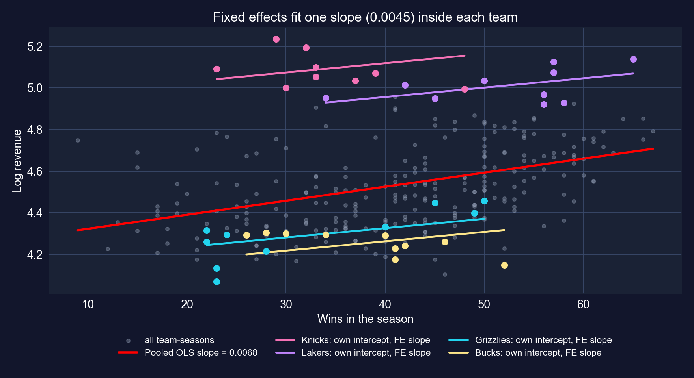
Pooled OLS (red) versus team-specific intercepts with a common fixed-effects slope, for four teams.
Big-market teams (Knicks, Lakers) sit on high lines, small-market teams (Grizzlies, Bucks) on low ones. The pooled line is steeper because it climbs across those lines.
\[\text{plim}\;\hat\beta_{\text{pooled}} = \beta + \gamma\,\frac{\text{Cov}(\alpha_i, x_{it})}{\text{Var}(x_{it})}\]
The direction of the change from pooled to FE is exactly what the omitted-variables formula predicts when the omitted trait helps both \(x\) and \(y\).
Winning pays, but far less than the cross-section suggests. Market size, not the win column, is where most revenue differences come from.
Absorbed (time-invariant)
Not absorbed (time-varying)
FE make the causal reading more plausible, not guaranteed. A natural next step is season fixed effects, | teamid + season, for league-wide shocks.
Random effects · efficiency vs consistency · the Hausman test
\[y_{it} = \beta_1 + \beta_2 x_{it} + \underbrace{(\alpha_i + \varepsilon_{it})}_{\text{composite error}}, \qquad \alpha_i \sim (0,\sigma_\alpha^2),\;\; \varepsilon_{it} \sim (0,\sigma_\varepsilon^2)\]
RE buys efficiency with an assumption. If big-market teams also win more, the assumption fails and RE inherits part of the pooled bias.
| Pooled OLS | Random effects | Fixed effects | |
|---|---|---|---|
| Variation used | between + within, equal weights | within + a fraction \((1-\theta)\) of between | within only |
| Assumes about \(\alpha_i\) | uncorrelated with \(x\) (and ignored) | uncorrelated with \(x\) | nothing; may correlate with \(x\) |
| Consistent if \(\alpha_i\) correlates with \(x\)? | no | no | yes |
| Efficient if it doesn’t? | no | yes | no |
| Time-invariant regressors? | yes | yes | no |
| NBA estimate | 0.00675 | not estimated | 0.00451 |
In observational panels the “no correlation” assumption is rarely credible, so FE is the default and RE needs a justification.
\[H = (\hat\beta_{FE} - \hat\beta_{RE})'\,\big[\widehat V(\hat\beta_{FE}) - \widehat V(\hat\beta_{RE})\big]^{-1}(\hat\beta_{FE} - \hat\beta_{RE}) \;\sim\; \chi^2_k\]
The chapter states the test but never computes it, so this deck reports no Hausman result for the NBA. Treat any claim that “Hausman rejects RE here” as unverified.
# continues from the previous block (the chapter's 17.4 code)
comparison_table = pd.DataFrame({
"Pooled OLS": [fit_pool.coef()["wins"], fit_pool.se()["wins"], fit_pool._r2, fit_pool._N],
"Fixed Effects": [fit_fe.coef()["wins"], fit_fe.se()["wins"], fit_fe._r2_within, fit_fe._N]
}, index=["Wins Coefficient", "Wins Std Error", "R²", "N"])
print(comparison_table) # R² rows differ in kind: overall vs within| Pooled OLS | Fixed effects | |
|---|---|---|
| Wins coefficient | 0.00675 | 0.00451 |
| Std. error (cluster) | 0.00191 | 0.00084 |
| \(R^2\) | 0.127 | 0.185 |
| \(N\) | 286 | 286 |
Binary outcomes · linear probability model · logit · marginal effects
Data. 872 full-time workers, 2010 (AED_EARNINGS_COMPLETE.DTA). Outcome: dbigearn = 1 if annual earnings exceed $60,000.
| Variable | Meaning | Mean |
|---|---|---|
dbigearn |
1 if earnings > $60,000 (238 workers) | 0.273 |
education |
years of schooling (0–20) | 13.85 |
age |
years | 43.3 |
Logit’s marginal effect \(\partial p/\partial x_j = p(1-p)\,\beta_j\) changes with \(p\), so you must say where you evaluate it.
!pip install -q pyfixest # pyfixest is not preinstalled in Colab
import pandas as pd # tabular data
import pyfixest as pf # OLS for the linear probability model
from statsmodels.formula.api import logit # logit with R-style formulas
url = "https://raw.githubusercontent.com/quarcs-lab/data-open/master/AED/AED_EARNINGS_COMPLETE.DTA"
data_earnings = pd.read_stata(url) # 872 full-time workers, 2010
data_earnings["dbigearn"] = (data_earnings["earnings"] > 60000).astype(int) # 1 = high earner
print(data_earnings["dbigearn"].mean()) # share of high earners
model_logit = logit("dbigearn ~ age + education", data=data_earnings).fit(cov_type="HC1", disp=0)
print(model_logit.summary()) # coefficients in log-odds units, robust SEs| Variable | Coef. | SE | \(z\) | \(p\) |
|---|---|---|---|---|
| Intercept | −8.0651 | 0.6914 | −11.67 | < 0.001 |
age |
0.0385 | 0.0080 | 4.85 | < 0.001 |
education |
0.3742 | 0.0366 | 10.22 | < 0.001 |
N = 872 · share with dbigearn = 1: 0.273 · HC1 SEs · McFadden pseudo-\(R^2 = 0.145\)
A logit coefficient of 0.37 is not “37 percentage points”. It is a change in log-odds.
# continues from the previous block
ame = model_logit.get_margeff() # default at="overall": AVERAGE marginal effects
mem = model_logit.get_margeff(at="mean") # marginal effects AT THE MEANS of age, education
print(ame.summary()); print(mem.summary())
fit_lpm = pf.feols("dbigearn ~ age + education", data=data_earnings, vcov="HC1")
fit_lpm.summary() # slopes are directly probability changes
p_lpm = fit_lpm.predict() # LPM fitted "probabilities"
print((p_lpm < 0).sum(), p_lpm.min()) # how many fall below zero?| Effect on \(\Pr(\text{earnings} > \$60\text{k})\) | education |
SE | age |
SE |
|---|---|---|---|---|
Logit, average marginal effect (get_margeff()) |
0.0618 | 0.0047 | 0.0064 | 0.0013 |
Logit, marginal effect at the means (at="mean") |
0.0662 | 0.0062 | 0.0068 | 0.0014 |
| Linear probability model (OLS, HC1) | 0.0540 | 0.0050 | 0.0064 | 0.0013 |
LPM: N = 872 · \(R^2 = 0.142\) · 95% CI for education [0.0442, 0.0639]
One more year of schooling raises the probability of earning above $60k by about 6.2 percentage points on average (logit), or 5.4 (LPM). Same sign, similar size.
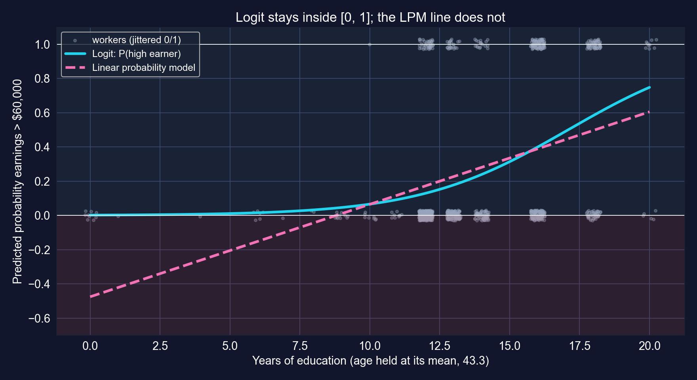
Predicted probability by years of education, age fixed at its mean. Shaded: impossible negative “probabilities”.
In the data, 30 of 872 LPM fitted values are negative (minimum −0.59). Every logit prediction stays between 0.001 and 0.86.
earnings, which the log-earnings regressions of earlier chapters use in fullA binary model changes the scale of the answer, not the identification problem.
17.5 – 17.6 · stationarity, spurious regression, HAC, autocorrelation, AR and ADL
Stationarity · spurious regression · levels with a trend · Newey–West HAC
Data. Monthly U.S. Treasury yields, January 1982 – January 2015: 397 months (AED_INTERESTRATES.DTA).
| Variable | Meaning | Mean | Range |
|---|---|---|---|
gs10 |
10-year Treasury rate, % | 6.19 | 1.53 – 14.59 |
gs1 |
1-year Treasury rate, % | 4.69 | 0.10 – 14.73 |
dgs10 |
monthly change in gs10, percentage points |
−0.03 | −1.43 – 0.78 |
dgs1 |
monthly change in gs1, percentage points |
−0.04 | −1.81 – 0.76 |
Economic question: how much of a move in short rates (which the Fed influences) passes through to long rates (which matter for mortgages and investment)?
With trending data a large \(R^2\) is a warning, not a reward. Two cures: difference the data, or keep levels and use HAC standard errors (and think hard).
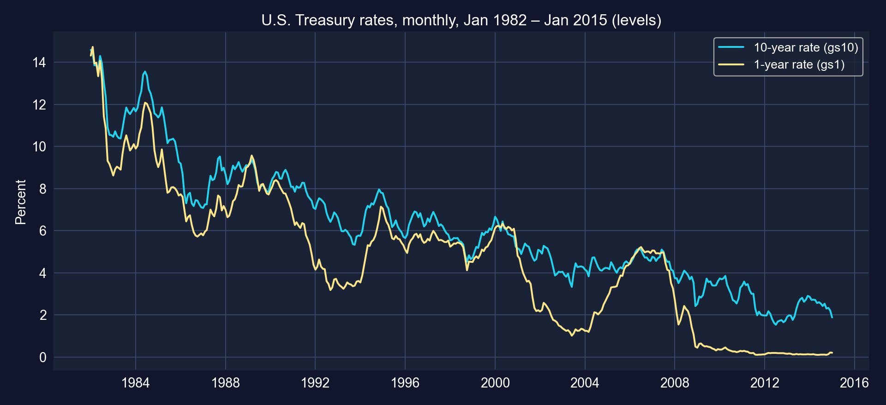
Monthly 10-year and 1-year Treasury yields, 1982–2015.
Over 33 years both rates fall by more than ten points. Any regression of one level on the other will partly fit this shared downward drift. In levels the two series correlate 0.95.
!pip install -q pyfixest # pyfixest is not preinstalled in Colab
import numpy as np # numerical operations
import pandas as pd # tabular data
import pyfixest as pf # OLS with default / HAC standard errors
url = "https://raw.githubusercontent.com/quarcs-lab/data-open/master/AED/AED_INTERESTRATES.DTA"
data_rates = pd.read_stata(url) # 397 months, Jan 1982 – Jan 2015
data_rates["time"] = np.arange(len(data_rates)) # linear time trend 0, 1, 2, ...
fit_levels = pf.feols("gs10 ~ gs1 + time", data=data_rates) # default SEs
fit_levels_hac = pf.feols("gs10 ~ gs1 + time", data=data_rates, vcov="NW",
vcov_kwargs={"time_id": "time", "lag": 24}) # Newey–West, 24 lags
fit_levels_hac.summary() # same coefficients, HAC SEs| Variable | Coef. | Default SE | Default \(t\) | HAC SE | HAC \(t\) | HAC ÷ default |
|---|---|---|---|---|---|---|
| Intercept | 5.8994 | 0.2254 | 26.17 | 0.6640 | 8.89 | 2.95 |
gs1 |
0.5076 | 0.0221 | 22.92 | 0.0808 | 6.28 | 3.65 |
time |
−0.0106 | 0.0006 | −16.69 | 0.0018 | −5.79 | 2.88 |
N = 397 · \(R^2 = 0.947\) · HAC: Newey–West, 24 lags · HAC 95% CI for gs1: [0.3488, 0.6663]
Holding a linear trend fixed, a 1-point higher short rate goes with a 0.51-point higher long rate. The fit looks superb, but the residuals are highly persistent, so default SEs overstate precision more than threefold.
\[\widehat V_{\text{HAC}} = (X'X)^{-1}\Big[\hat\Omega_0 + \sum_{\ell=1}^{L} w_\ell\,\big(\hat\Omega_\ell + \hat\Omega_\ell'\big)\Big](X'X)^{-1}, \qquad w_\ell = 1 - \frac{\ell}{L+1}\]
HAC is to time series what clustering is to panels: same sandwich, different idea of which errors may be correlated.
Correlogram · consequences · first differencing
A slowly decaying correlogram is the fingerprint of a non-stationary, near-unit-root error.
# continues from the previous block
from statsmodels.tsa.stattools import acf # autocorrelation function
from statsmodels.graphics.tsaplots import plot_acf # correlogram plot
data_rates["uhatgs10"] = fit_levels._u_hat # residuals of the levels regression
acf_resid = acf(data_rates["uhatgs10"].dropna(), nlags=10) # lags 0..10
for k in range(11): print(k, round(acf_resid[k], 3)) # lag-1 ≈ 0.95
plot_acf(data_rates["uhatgs10"].dropna(), lags=24, alpha=0.05) # with a 95% band| Lag | \(r_k\) |
|---|---|
| 1 | 0.953 |
| 2 | 0.888 |
| 3 | 0.830 |
| 4 | 0.769 |
| 5 | 0.709 |
| 8 | 0.538 |
| 10 | 0.425 |
95% band: ±0.098
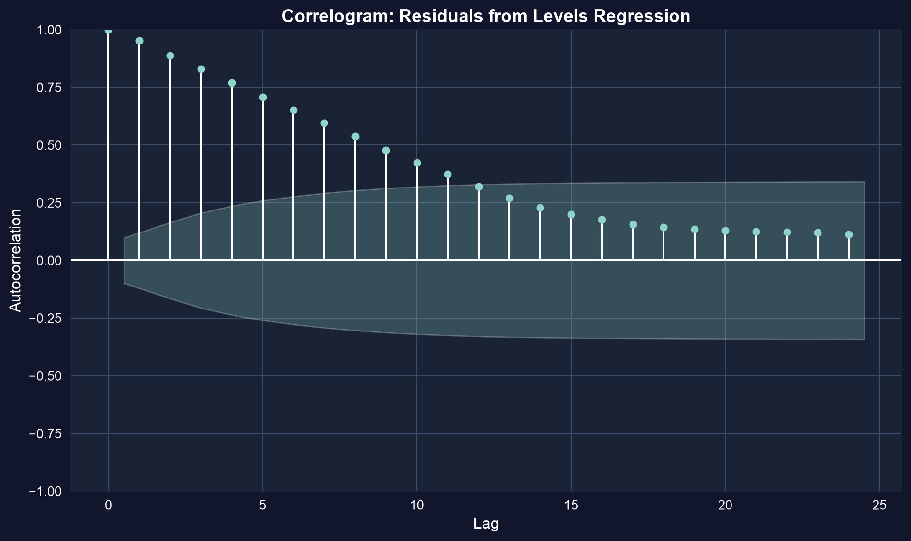
Still 0.42 after ten months. Errors this persistent mean the 397 months carry far less independent information than 397 observations, which is why HAC SEs were 3.65× larger.
\[\Delta y_t = y_t - y_{t-1}, \qquad \Delta\text{gs10}_t = \beta_1 + \beta_2\,\Delta\text{gs1}_t + u_t\]
The time-series cousin of fixed effects: drop the persistent component, keep the changes.
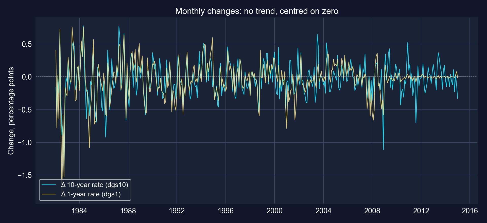
Monthly changes in the 10-year and 1-year rates, 1982–2015.
The changes look stationary: no drift, a constant mean near zero, but bursts of volatility (early 1980s, 2008), a reminder to use robust SEs.
# continues from the previous block
fit_changes = pf.feols("dgs10 ~ dgs1", data=data_rates) # regression in first differences
fit_changes.summary() # N = 396 (first month has no change)
uhat_dgs10 = fit_changes._u_hat # residuals in changes
acf_dgs10_resid = acf(uhat_dgs10[~np.isnan(uhat_dgs10)], nlags=10)
print(acf_dgs10_resid[1]) # lag-1 autocorrelation| Variable | Coef. | SE | \(t\) | \(p\) | 95% CI |
|---|---|---|---|---|---|
| Intercept | −0.0064 | 0.0091 | −0.71 | 0.480 | [−0.0243, 0.0115] |
dgs1 |
0.7198 | 0.0314 | 22.89 | < 0.001 | [0.6580, 0.7817] |
N = 396 · default SEs (as in the chapter) · \(R^2 = 0.571\) · residual autocorrelation: lag 1 = 0.255, lag 2 = −0.039, lag 3 = 0.061
| Levels + trend | Changes | |
|---|---|---|
| Slope on the 1-year rate | 0.508 | 0.720 |
| \(R^2\) | 0.947 | 0.571 |
| Residual lag-1 autocorrelation | 0.953 | 0.255 |
A 1-point change in the short rate goes with a 0.72-point change in the long rate the same month. \(R^2\) falls, but now it is honest.
AR(\(p\)) · ADL(\(p,q\)) · impact and cumulative multipliers
\[\text{AR}(p):\quad y_t = \beta_0 + \alpha_1 y_{t-1} + \cdots + \alpha_p y_{t-p} + u_t\]
\[\text{ADL}(p,q):\quad y_t = \beta_0 + \sum_{j=1}^{p}\alpha_j\,y_{t-j} + \sum_{j=0}^{q}\gamma_j\,x_{t-j} + u_t\]
Here \(y_t = \Delta\text{gs10}_t\) and \(x_t = \Delta\text{gs1}_t\): an ADL(2,2) in changes.
# continues from the previous block
for k in [1, 2]: # lags with .shift(k)
data_rates[f"dgs10_lag{k}"] = data_rates["dgs10"].shift(k)
data_rates[f"dgs1_lag{k}"] = data_rates["dgs1"].shift(k)
fit_adl = pf.feols("dgs10 ~ dgs10_lag1 + dgs10_lag2 + dgs1 + dgs1_lag1 + dgs1_lag2",
data=data_rates) # ADL(2,2), N = 394
fit_adl.summary() # default SEs, as in the chapter
c = fit_adl.coef() # cumulative pass-through:
print(c["dgs1"], c["dgs1"] + c["dgs1_lag1"], c["dgs1"] + c["dgs1_lag1"] + c["dgs1_lag2"])
print(acf(pd.Series(fit_adl._u_hat).dropna(), nlags=1)[1]) # residual lag-1 autocorrelation| Variable | Coef. | SE | \(t\) | \(p\) | 95% CI |
|---|---|---|---|---|---|
| Intercept | −0.0067 | 0.0088 | −0.76 | 0.447 | [−0.0239, 0.0106] |
dgs10_lag1 |
0.2830 | 0.0508 | 5.57 | < 0.001 | [0.1831, 0.3828] |
dgs10_lag2 |
−0.1021 | 0.0506 | −2.02 | 0.044 | [−0.2015, −0.0027] |
dgs1 |
0.7397 | 0.0340 | 21.74 | < 0.001 | [0.6728, 0.8066] |
dgs1_lag1 |
−0.2588 | 0.0514 | −5.03 | < 0.001 | [−0.3599, −0.1576] |
dgs1_lag2 |
0.0515 | 0.0492 | 1.05 | 0.296 | [−0.0453, 0.1482] |
N = 394 · default SEs · \(R^2 = 0.611\) · residual lag-1 autocorrelation 0.008
Same month: 0.74 points of pass-through. Next month a partial reversal (−0.26). The long rate’s own lagged change enters positively (+0.28): momentum, not mean reversion.
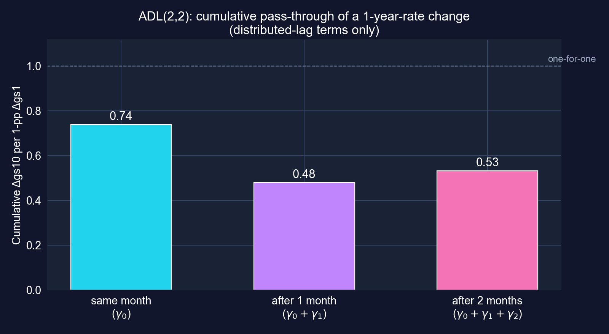
Cumulative distributed-lag multipliers from the ADL(2,2).
About 0.74 of a 1-point short-rate change shows up in the long rate at once; after the partial reversal, 0.53 has passed through within two months.
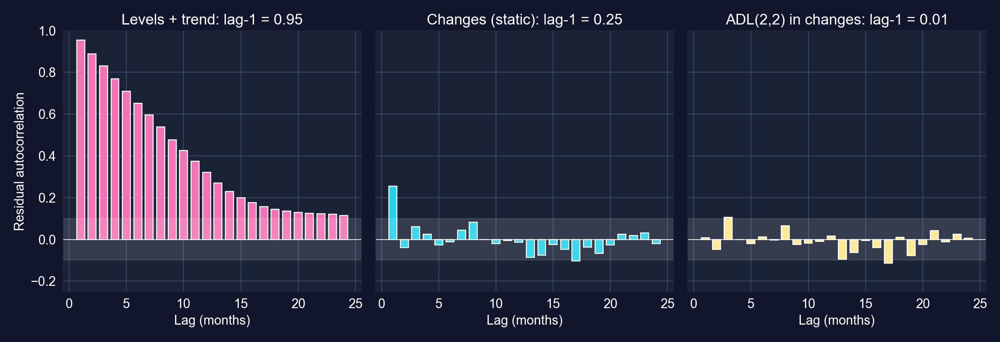
Residual autocorrelations, lags 1–24, for three specifications. Shaded band: ±1.96/√T.
Levels: 0.95. Static changes: 0.25. ADL(2,2): 0.01. Modelling the dynamics leaves residuals that look like white noise.
# continues from the previous block (computed for these slides)
samp = data_rates.dropna(subset=["dgs10_lag2", "dgs1_lag2"]) # same 394 months for all
models = {"static": "dgs10 ~ dgs1", "AR(2)": "dgs10 ~ dgs10_lag1 + dgs10_lag2",
"ADL(2,2)": "dgs10 ~ dgs10_lag1 + dgs10_lag2 + dgs1 + dgs1_lag1 + dgs1_lag2"}
for name, fml in models.items():
f = pf.feols(fml, data=samp); n, k = f._N, len(f.coef())
bic = n * np.log((f._u_hat ** 2).sum() / n) + k * np.log(n) # lower is better
print(name, round(f._r2, 3), round(acf(pd.Series(f._u_hat), nlags=1)[1], 3), round(bic, 1))| Model | \(R^2\) | Residual lag-1 \(\rho\) | BIC |
|---|---|---|---|
| Static: \(\Delta\)gs10 on \(\Delta\)gs1 | 0.573 | 0.259 | −1346.8 |
| AR(2): own lags only | 0.125 | 0.012 | −1057.9 |
| ADL(2,2) | 0.611 | 0.008 | −1359.7 |
A time-series regression is credible when its residuals are white noise and its story survives a check of stability and common shocks.
17.7 · endogeneity · instrumental variables · the causal toolkit
Concepts only · worked designs in the Chapter 13 deck
\[y = \beta_1 + \beta_2 x + u, \qquad \text{OLS is consistent only if } E[u \mid x] = 0\]
Adding controls fixes only the confounders you measure. Credible causal claims need an identification strategy.
\[\text{individual effect} = Y_{1i} - Y_{0i}, \qquad \text{ATE} = E[Y_{1i} - Y_{0i}]\]
A causal estimate is a claim about a counterfactual. The design is the argument for why your comparison group stands in for it.
An instrument \(z\) must satisfy two conditions:
With one regressor and one instrument, substitute \(y = \beta_1 + \beta_2 x + u\) into \(\text{Cov}(z, y)\):
\[\text{Cov}(z,y) = \beta_2\,\text{Cov}(z,x) + \underbrace{\text{Cov}(z,u)}_{=\,0} \;\;\Longrightarrow\;\; \hat\beta_{IV} = \frac{\widehat{\text{Cov}}(z,y)}{\widehat{\text{Cov}}(z,x)} = \frac{\text{reduced form}}{\text{first stage}}\]
IV is consistent where OLS is not, but only for the variation the instrument moves (a local effect), and only as good as the exclusion argument.
| Method | Source of variation | Identifying assumption | Where to see it worked |
|---|---|---|---|
| Randomized experiment | random assignment | randomization intact (no attrition bias) | Ch 13.5 · RAND HIE |
| Fixed effects | within-unit changes | no time-varying confounders | this deck, 17.3, CS 1, CS 2 |
| Difference-in-differences | group × period | parallel trends | Ch 13.6 · South Africa |
| Regression discontinuity | a cutoff in a running variable | continuity at the cutoff | Ch 13.7 · U.S. Senate |
| Instrumental variables | an instrument | relevance + exclusion | Ch 13.8 · institutions |
| Matching / propensity scores | observed covariates | selection on observables only | (named in the chapter; not worked) |
Every row trades the unverifiable “I controlled for everything” for a specific assumption you can defend, probe, or attack.
| Ch 13 case | Design | Naive comparison | Design-based estimate |
|---|---|---|---|
| 13.5 | RCT (health insurance) | (randomized: no naive version needed) | 95% plan: −$1,108 vs free care |
| 13.6 | DiD (child nutrition) | treated before vs after: +0.867 | +0.522 z-units |
| 13.7 | RD (Senate incumbency) | winners vs losers: +21.7 pp | +4.8 pp |
| 13.8 | IV (institutions) | OLS: 0.52 | 2SLS: 0.94 |
Same lesson as pooled vs FE in this chapter: when the comparison changes, the number changes, sometimes by a factor of four.
A design earns a causal claim; a significant \(t\)-statistic does not.
Case Study 1 · cross-country productivity · Case Study 2 · night lights in Bolivia
108 countries × 25 years · variance decomposition · cluster SEs · FE · two-way FE · regions
Data. Mendez (2020) convergence-clubs panel: 108 countries × 1990–2014 = 2,700 country-years (balanced).
| Variable | Meaning | Mean | Range |
|---|---|---|---|
ln_lp |
log labor productivity (output per worker) | 9.80 | 6.90 – 11.94 |
ln_kl |
log physical capital per worker | 10.76 | 6.59 – 13.22 |
h |
human capital index (schooling-based) | 2.99 | 1.32 – 5.20 |
region |
Africa 26 · Americas 22 · Asia 28 · Europe 30 · Oceania 2 countries |
\[\ln lp_{it} = \alpha_i + \beta_k \ln kl_{it} + \beta_h\, h_{it} + \varepsilon_{it}\]
Correction. The chapter’s variable list and Task 1 code use rk and hc, which do not exist in this file (the code stops with a KeyError). The columns are kl and h; the slides use them throughout.
!pip install -q pyfixest # pyfixest is not preinstalled in Colab
import numpy as np, pandas as pd, pyfixest as pf # numerics, tables, regressions
base = "https://raw.githubusercontent.com/quarcs-lab/mendez2020-convergence-clubs-code-data/"
dat = pd.read_csv(base + "master/assets/dat.csv") # 108 countries × 1990–2014
dat["ln_lp"] = np.log(dat["lp"]) # log labor productivity
dat["ln_kl"] = np.log(dat["kl"]) # log capital per worker (chapter: "rk")
print(dat["country"].nunique(), dat["year"].nunique(), len(dat)) # 108 25 2700
overall_var = dat["ln_lp"].var() # all country-years
between_var = dat.groupby("country")["ln_lp"].mean().var() # 108 country means
within_var = dat.groupby("country")["ln_lp"].apply(lambda x: x - x.mean()).var()
print(overall_var, between_var, within_var, between_var / overall_var)Variance of ln_lp |
Share | |
|---|---|---|
| Overall (2,700 country-years) | 1.391 | 100% |
| Between (108 country means) | 1.328 | 95.4% |
| Within (deviations from own mean) | 0.075 | 5.4% |
Shares need not sum to exactly 100%: the between variance is computed over 108 means, the within variance over 2,700 deviations.
Productivity differences are overwhelmingly permanent cross-country gaps. Pooled OLS will be driven by them; fixed effects will keep only the 5% that moves within countries.
# continues from the previous block
fit_default = pf.feols("ln_lp ~ ln_kl + h", data=dat) # iid SEs
fit_hc1 = pf.feols("ln_lp ~ ln_kl + h", data=dat, vcov="HC1") # robust
fit_cluster = pf.feols("ln_lp ~ ln_kl + h", data=dat, vcov={"CRV1": "country"}) # by country
print(pd.DataFrame({"default": fit_default.se(), "HC1": fit_hc1.se(),
"cluster": fit_cluster.se()}).round(4)) # same coefficients, three SEs
print((fit_cluster.se() / fit_default.se()).round(2)) # inflation factor
fit_cluster.summary()| Variable | Coef. | Default SE | HC1 SE | Cluster SE | Cluster ÷ default | \(t\) (default → cluster) |
|---|---|---|---|---|---|---|
| Intercept | 1.6949 | 0.0581 | 0.0724 | 0.2716 | 4.67 | 29.15 → 6.24 |
ln_kl |
0.7136 | 0.0081 | 0.0089 | 0.0327 | 4.03 | 87.74 → 21.79 |
h |
0.1410 | 0.0148 | 0.0150 | 0.0612 | 4.12 | 9.50 → 2.30 |
N = 2,700 · 108 country clusters · \(R^2 = 0.908\) · cluster 95% CI: ln_kl [0.6487, 0.7785], h [0.0196, 0.2623] (\(p = 0.023\))
25 years of one country are nearly one observation’s worth of evidence about its level: clustering inflates SEs about 4×. h drops from \(t = 9.5\) to a borderline \(t = 2.3\).
| Variable | Coef. | SE | \(t\) | \(p\) | 95% CI |
|---|---|---|---|---|---|
ln_kl |
0.4377 | 0.0377 | 11.61 | < 0.001 | [0.3630, 0.5125] |
h |
0.2226 | 0.0566 | 3.93 | < 0.001 | [0.1104, 0.3348] |
N = 2,700 · 108 country fixed effects · CRV1 by country · within \(R^2 = 0.670\) · computed for these slides
ln_kl: pooled 0.714 → FE 0.438. Within a country, 1% more capital per worker goes with about 0.44% more output per workerh: pooled 0.141 → FE 0.223. One more unit of the index: \(100(e^{0.2226}-1) = 25\%\) higher productivityThe capital slope behaves like the NBA case (a positive confounder removed). Human capital moves the other way: FE does not always shrink coefficients.
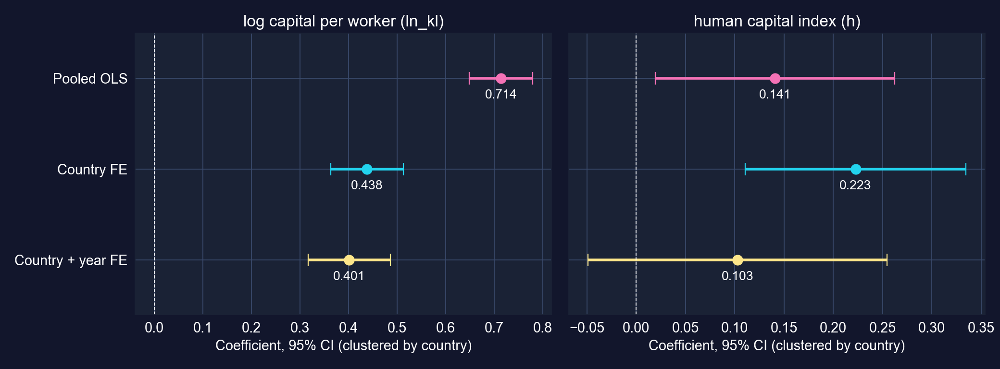
Coefficients with 95% CIs (clustered by country) under three specifications.
Capital’s elasticity is stable once country effects are in (0.44 → 0.40). Human capital’s is not: adding year effects makes it insignificant.
# continues from the previous block
fit_twfe = pf.feols("ln_lp ~ ln_kl + h | country + year", data=dat,
vcov={"CRV1": "country"}) # two-way FE: country AND year
fit_twfe.summary()
fit_trend = pf.feols("ln_lp ~ ln_kl + h + year | country", data=dat,
vcov={"CRV1": "country"}) # a common linear trend instead
fit_trend.summary()
year_fe = fit_twfe.fixef() # estimated year effects (1990 = 0)
print(year_fe)| Variable | Coef. | SE | \(t\) | \(p\) | 95% CI |
|---|---|---|---|---|---|
ln_kl |
0.4014 | 0.0428 | 9.38 | < 0.001 | [0.3166, 0.4862] |
h |
0.1028 | 0.0766 | 1.34 | 0.183 | [−0.0491, 0.2547] |
Two-way FE (country + year) · N = 2,700 · CRV1 by country · within \(R^2 = 0.337\) · computed for these slides
With a linear trend instead of year effects: ln_kl 0.4071, h 0.1009 (\(p = 0.183\)), trend +0.0057 per year (\(p = 0.034\)), i.e. about 0.57% a year of common productivity growth beyond capital and schooling.
Capital’s within-country elasticity survives common shocks (≈ 0.40). Human capital’s does not: its FE estimate partly reflected the worldwide upward trend in schooling.
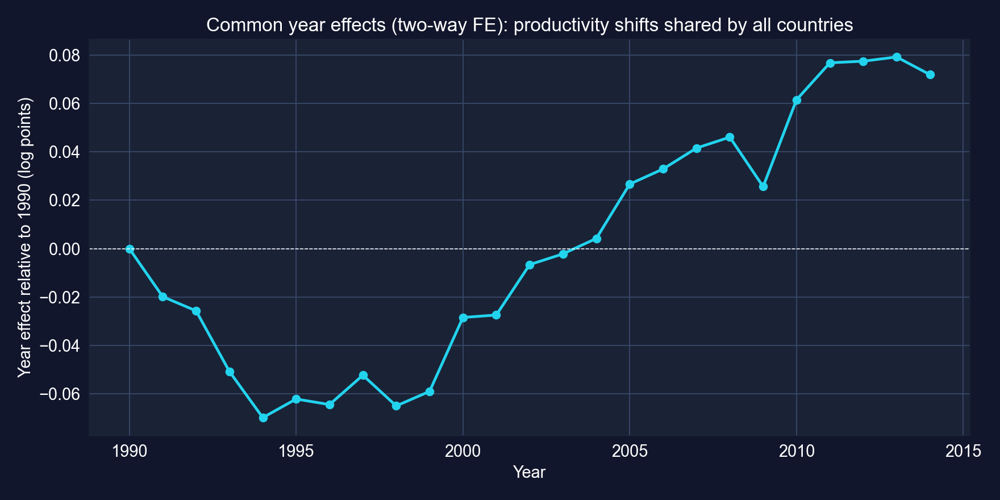
Estimated year fixed effects from the two-way FE model, relative to 1990.
After netting out capital and schooling, the common component falls in the early 1990s, rises from 2000 to 2008, dips in 2009, and recovers.
# continues from the previous block (computed for these slides)
dat["t"] = dat["year"] - 1990 # years since 1990
fit_rt = pf.feols("ln_lp ~ ln_kl + h + i(region, t) | country", data=dat, vcov={"CRV1": "country"})
names = fit_rt.coef().index; rt = [k for k in names if k.startswith("region::")]
R = np.zeros((len(rt) - 1, len(names))) # H0: all trends = Africa's
for j, k in enumerate(rt[1:]):
R[j, names.get_loc(k)], R[j, names.get_loc(rt[0])] = 1, -1
print(fit_rt.coef()[rt]); print(fit_rt.wald_test(R=R)) # Wald chi2(4)
first = dat[dat["year"] == 1990].set_index("country")["ln_lp"] # initial productivity
last = dat[dat["year"] == 2014].set_index("country")["ln_lp"]
conv = pd.DataFrame({"ln_lp0": first, "g": 100 * (last - first) / 24}).reset_index()
pf.feols("g ~ ln_lp0", data=conv, vcov="HC1").summary() # growth on initial level| Region trend (per year) | Coef. | \(p\) |
|---|---|---|
| Africa | 0.0015 | 0.665 |
| Americas | 0.0066 | 0.035 |
| Asia | 0.0135 | 0.010 |
| Europe | 0.0126 | 0.001 |
| Oceania (2 countries) | 0.0067 | < 0.001 |
Country FE + ln_kl + h · CRV1 · equal-trends test: Wald \(\chi^2(4) = 11.39\), \(p = 0.023\)
| Convergence regression | Coef. | SE | \(p\) |
|---|---|---|---|
| Intercept | 4.520 | 1.836 | 0.015 |
ln_lp0 (1990) |
−0.222 | 0.180 | 0.221 |
N = 108 · HC1 · \(R^2 = 0.018\) · growth in % per year
Beyond capital and schooling, productivity trended up about 1.3% a year in Asia and Europe and barely at all in Africa. There is no unconditional convergence: the slope on initial productivity is small and insignificant.
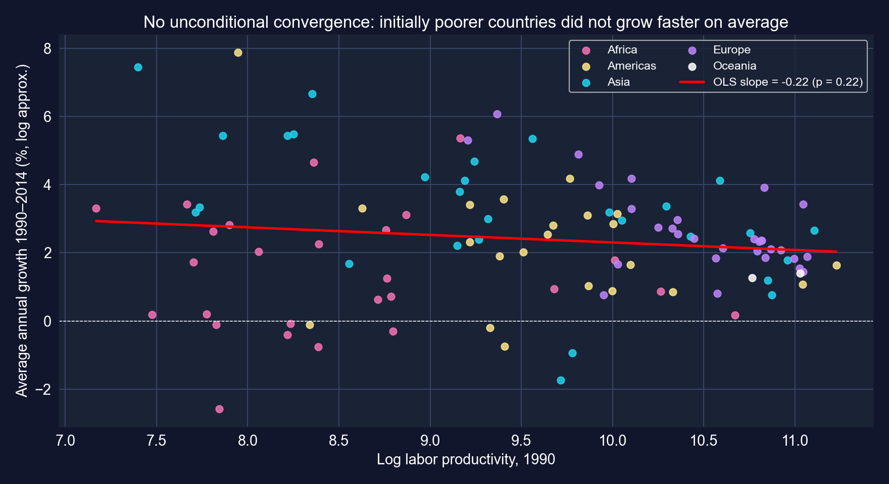
Average annual growth of labor productivity, 1990–2014, against its 1990 level; 108 countries.
A cloud with a faintly negative slope: some poor Asian economies raced ahead, many African economies did not. This is why the Mendez data are about convergence clubs, not one global convergence.
# continues from the previous block (computed for these slides)
fit_r1 = pf.feols("ln_lp ~ ln_kl + h + C(region)", data=dat, vcov={"CRV1": "country"})
fit_r2 = pf.feols("ln_lp ~ ln_kl + h + C(region) + C(region):ln_kl + C(region):h",
data=dat, vcov={"CRV1": "country"}) # region-specific slopes
fit_r1.summary(); fit_r2.summary()
inter = [k for k in fit_r2.coef().index if ":" in k] # the 8 interaction terms
R = np.array([[1.0 * (k == a) for k in fit_r2.coef().index] for a in inter])
print(fit_r2.wald_test(R=R)) # H0: all 8 interactions = 0| Region | Implied ln_kl slope |
Implied h slope |
|---|---|---|
| Africa (reference) | 0.640 | 0.257 |
| Americas | 0.671 | 0.293 |
| Asia | 0.778 | −0.075 |
| Europe | 0.679 | 0.048 |
| Oceania (2 countries) | 0.649 | 0.110 |
Implied slope = base slope + region interaction · joint test of all 8 interactions: Wald \(\chi^2(8) = 13.90\), \(p = 0.084\) · region dummies alone: only Oceania differs from Africa (\(p = 0.034\)) · computed for these slides
Returns to capital look similar across regions (0.64–0.78), and the interactions are jointly significant only at 10%. No region-specific interaction is individually significant at 5%.
| Specification | ln_kl |
h |
Variation used |
|---|---|---|---|
| Pooled OLS, cluster SEs | 0.714 (0.033) | 0.141 (0.061) | between + within |
| Country FE | 0.438 (0.038) | 0.223 (0.057) | within country |
| Country + year FE | 0.401 (0.043) | 0.103 (0.077) | within country, net of common shocks |
| Region-specific slopes (pooled) | 0.64 – 0.78 | −0.08 – 0.29 | between + within, by region |
Policy reading: investment climates that raise capital per worker are the best-supported channel in these data, and pooled cross-country estimates overstate it by about 40%.
339 municipalities × 2012–2020 · reshaping · pooled · FE · year effects · first differences
Data. DS4Bolivia (ds4bolivia_v20250523.csv): 339 municipalities, annual columns ln_NTLpc2012 … ln_NTLpc2020 and pop2012 … pop2020, stored wide (one row per municipality).
| Variable | Meaning |
|---|---|
ln_NTLpc |
log nighttime lights per capita (outcome) |
ln_pop |
log population |
year |
2012, …, 2020 |
asdf_id, mun, dep |
municipality id, name, department (9 departments) |
\[\ln NTLpc_{it} = \alpha_i + \beta\,\ln pop_{it} + \delta_t + \varepsilon_{it}\]
Research question: how does luminosity evolve within municipalities over time, and how does it move with population once fixed local traits (altitude, remoteness, climate) are removed?
!pip install -q pyfixest # pyfixest is not preinstalled in Colab
import numpy as np, pandas as pd, pyfixest as pf # numerics, tables, regressions
url_bol = "https://raw.githubusercontent.com/quarcs-lab/ds4bolivia/master/ds4bolivia_v20250523.csv"
bol = pd.read_csv(url_bol) # 339 municipalities, wide format
years = range(2012, 2021) # nine annual observations
ntl_long = bol[["mun", "dep", "asdf_id"] + [f"ln_NTLpc{y}" for y in years]].melt(
id_vars=["mun", "dep", "asdf_id"], var_name="ntl_var", value_name="ln_NTLpc")
ntl_long["year"] = ntl_long["ntl_var"].str.extract(r"(\d{4})").astype(int) # "…2015" → 2015
pop_long = bol[["asdf_id"] + [f"pop{y}" for y in years]].melt(
id_vars=["asdf_id"], var_name="pop_var", value_name="pop")
pop_long["year"] = pop_long["pop_var"].str.extract(r"(\d{4})").astype(int)# continues from the previous block
panel = ntl_long.merge(pop_long[["asdf_id", "year", "pop"]], on=["asdf_id", "year"], how="left")
panel["ln_pop"] = np.log(panel["pop"]) # log population
panel = panel.sort_values(["asdf_id", "year"]).reset_index(drop=True)
print(panel.shape, panel["asdf_id"].nunique()) # rows × columns, municipalities
print(panel["ln_NTLpc"].isna().sum()) # missing light values
panel_reg = panel[["ln_NTLpc", "ln_pop", "year", "mun", "dep", "asdf_id"]].dropna()
print(len(panel_reg), panel_reg["asdf_id"].nunique()) # estimation sample| Rows | Municipalities | |
|---|---|---|
| Full panel (339 × 9) | 3,051 | 339 |
Missing ln_NTLpc |
67 | |
| Estimation sample | 2,984 | 337 |
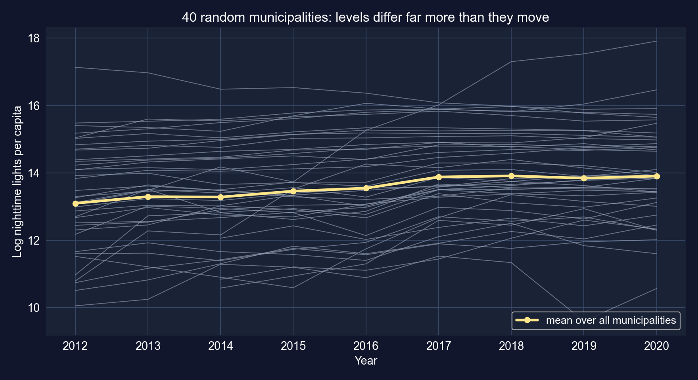
Log night lights per capita for 40 randomly chosen municipalities, with the all-municipality mean.
| Variance of… | Overall | Between | Within | Between share |
|---|---|---|---|---|
ln_NTLpc |
1.729 | 1.635 | 0.220 | 94.6% |
ln_pop |
1.278 | 1.283 | 0.0055 | ≈ 100% (within 0.4%) |
# continues from the previous block
fit_def = pf.feols("ln_NTLpc ~ ln_pop + year", data=panel_reg) # default SEs
fit_pooled = pf.feols("ln_NTLpc ~ ln_pop + year", data=panel_reg, vcov={"CRV1": "asdf_id"})
print((fit_pooled.se() / fit_def.se()).round(2)) # cluster ÷ default, per coefficient
fit_pooled.summary()| Variable | Coef. | SE | \(t\) | \(p\) | 95% CI |
|---|---|---|---|---|---|
| Intercept | −200.1384 | 12.3774 | −16.17 | < 0.001 | [−224.4854, −175.7914] |
ln_pop |
0.3385 | 0.0472 | 7.18 | < 0.001 | [0.2457, 0.4312] |
year |
0.1044 | 0.0062 | 16.88 | < 0.001 | [0.0923, 0.1166] |
N = 2,984 · 337 clusters · \(R^2 = 0.130\) · cluster ÷ default SE: ln_pop 2.37, year 0.71
A between-municipality comparison: cities versus rural municipalities differ in far more than population.
| Variable | Coef. | SE | \(t\) | \(p\) | 95% CI |
|---|---|---|---|---|---|
ln_pop |
−0.8237 | 0.2942 | −2.80 | 0.005 | [−1.4023, −0.2450] |
year |
0.1320 | 0.0066 | 20.04 | < 0.001 | [0.1191, 0.1450] |
N = 2,983 (one singleton dropped) · 337 municipality FE · CRV1 · within \(R^2 = 0.429\)
The population slope flips sign: +0.34 pooled, −0.82 within municipalities.
Treat −0.82 as fragile: population figures between censuses are usually projections, so their year-to-year deviations may be smoothing artefacts, not real migration.
# continues from the previous block
fit_yfe = pf.feols("ln_NTLpc ~ ln_pop + C(year) | asdf_id", data=panel_reg,
vcov={"CRV1": "asdf_id"}) # 2012 = reference year
yk = [k for k in fit_yfe.coef().index if k.startswith("C(year)")]
R = np.array([[1.0 * (k == a) for k in fit_yfe.coef().index] for a in yk])
print(fit_yfe.wald_test(R=R)) # H0: no year effects
print(fit_yfe.coef()[yk].round(3)) # path relative to 2012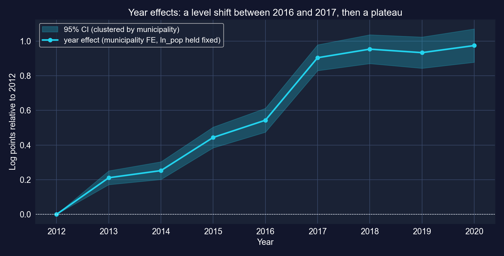
Year effects (log points relative to 2012), with municipality FE and log population held fixed.
Joint test of the 8 year effects: Wald \(\chi^2(8) = 706.3\), \(p < 0.001\) · ln_pop −0.8173 (SE 0.2957) · within \(R^2 = 0.469\) · computed for these slides
Not steady growth: +0.54 by 2016, a jump of 0.36 to 2017, then a plateau near +0.95. Ask whether the satellite product or its processing changed before reading a jump as development.
# continues from the previous block
panel_reg = panel_reg.sort_values(["asdf_id", "year"])
panel_reg["d_ln_NTLpc"] = panel_reg.groupby("asdf_id")["ln_NTLpc"].diff() # vs previous row
panel_reg["d_ln_pop"] = panel_reg.groupby("asdf_id")["ln_pop"].diff()
fd_data = panel_reg.dropna(subset=["d_ln_NTLpc", "d_ln_pop"]) # drop first years
fit_fd = pf.feols("d_ln_NTLpc ~ d_ln_pop", data=fd_data, vcov={"CRV1": "asdf_id"})
fit_fd.summary() # change on change| Variable | Coef. | SE | \(t\) | \(p\) | 95% CI |
|---|---|---|---|---|---|
| Intercept | 0.1200 | 0.0059 | 20.29 | < 0.001 | [0.1083, 0.1316] |
d_ln_pop |
−0.5205 | 0.2928 | −1.78 | 0.076 | [−1.0964, 0.0554] |
N = 2,647 · CRV1 by municipality · \(R^2 = 0.002\) · the intercept is the average yearly change (≈ +12.7% a year in per-capita lights)
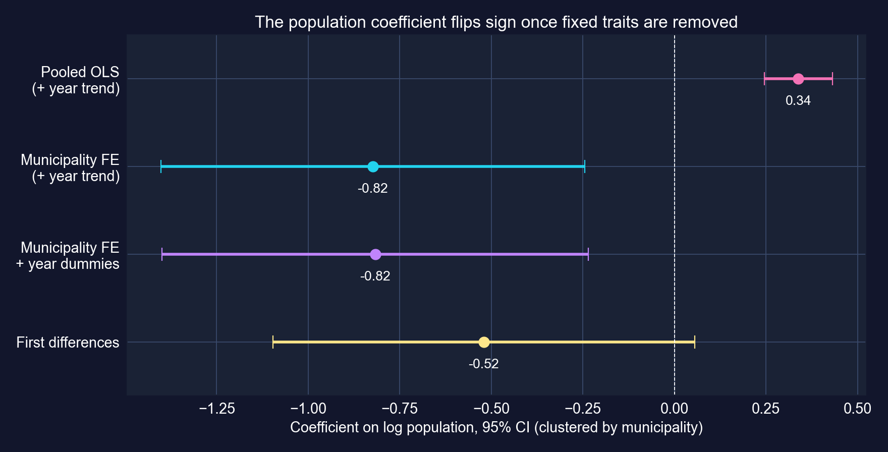
Coefficient on log population, 95% CIs clustered by municipality, across four specifications.
Positive between municipalities, negative within them, and only borderline in first differences.
Both point the same way, but FD cannot reject zero at 5%. The population slope is the weakest link in this case study.
# continues from the previous block (computed for these slides)
for v in ["ln_NTLpc", "ln_pop"]:
overall = panel_reg[v].var() # all rows
between = panel_reg.groupby("asdf_id")[v].mean().var() # municipality means
within = panel_reg.groupby("asdf_id")[v].apply(lambda x: x - x.mean()).var()
print(v, round(overall, 4), round(between, 4), round(within, 4))
dep = panel_reg.pivot_table(index="dep", columns="year", values="ln_NTLpc", aggfunc="mean")
print((dep[2020] - dep[2012]).sort_values().round(2)) # change by department| Evidence | Result |
|---|---|
Variation in ln_NTLpc |
95% between municipalities; within changes are small but real |
| Pooled population slope | +0.34 (cluster SE 0.047): bigger places brighter per person |
| FE / FD population slope | −0.82 (\(p = 0.005\)) / −0.52 (\(p = 0.076\)): fragile |
| Time path (year effects) | +0.97 log points 2012 → 2020, with a 0.36 jump in 2017 |
| By department, 2012 → 2020 | Chuquisaca +1.24, Beni +1.20, La Paz +1.04 … Tarija +0.46, Pando −0.50 |
Satellite panels can track municipal change over time, but the within-municipality slope is only as good as the time variation in the regressor.
Act III · The resolution
| Example | Coefficient | All variation (pooled / levels) | Within or changes only | Change |
|---|---|---|---|---|
| NBA revenue | wins |
0.00675 | FE: 0.00451 | −33% |
| Productivity, 108 countries | ln_kl |
0.714 | FE: 0.438 | −39% |
| Productivity, 108 countries | h |
0.141 | FE: 0.223 | +58% |
| Night lights, 337 municipalities | ln_pop |
+0.338 | FE: −0.824; FD: −0.521 | sign flips |
| Treasury rates | 1-year rate | levels + trend: 0.508 | changes: 0.720 | different question |
No rule says the within estimate is smaller. It can shrink, grow or flip. What is constant is the lesson: the comparison defines the coefficient.
| Example | Honest SE | Ratio to default SE | What the default ignored |
|---|---|---|---|
| NBA, pooled | cluster by team | 1.81 | 10 seasons of one team are correlated |
| NBA, FE | cluster by team | 1.42 | serial correlation left after removing \(\alpha_i\) |
| Countries, pooled | cluster by country | 4.03 (ln_kl) |
25 smooth years per country |
| Municipalities, pooled | cluster by municipality | 2.37 (ln_pop), 0.71 (year) |
within-municipality dependence, either sign |
| Treasury rates, levels | Newey–West, 24 lags | 3.65 | residual autocorrelation of 0.95 |
Same coefficients, very different confidence. Inference must allow the dependence the data actually have, and it can move the SE either way.
Start from the structure of the data and the likely confounders, then pick the estimator, then the standard error.
Objection. “Fixed effects control for unobserved heterogeneity, so the FE coefficient is causal.”
Response. FE remove only what is constant within a unit. In the NBA a new star raises wins and revenue in the same season; in Bolivia population and lights co-move with whatever drives local growth. And FE throw away the between variation, so the estimate rests on the within variation that remains: 69% of the variance of wins, but only 0.4% of the variance of municipal population.
FE are a design with an assumption (no time-varying confounders) and a cost (less variation). Check both before saying “effect”.
The unit errors corrected in this deck: rate changes in percentage points (not %), logit coefficients as log-odds (not probabilities), and log-point effects converted with \(e^b - 1\).